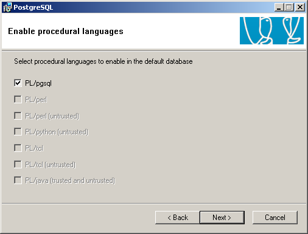

|
 |
Best-selling book on enterprise management |
Module Technical Guide: Introspection report on objects
Enter search terms or a module, class or function name.

Retail and Industrial Management, steps towards Sales, Logistics and Manufacturing Integration in the Open Source & Management Collection. |
For Windows Vista installation please review this forum posts
leave the default selection:
You don’t need to change the default selections:


If you see this screen at the end of PostgreSQL installation, it is due to an incorrect Account domain in the Service configuration screen. By default the installer fills this value automatically, so if you have changed it, it may cause the installation to fail.
Redo the installation of PostgreSQL and leave Account domain in the Service configuration screen on the default value.
During the installation of PostgreSQL you may get an error saying:
Account @#$%@#$^@% doesn’t exist
This error was encountered once with the Open ERP Complete Autoinstaller.
The problems seems to be that in order to install PostgreSQL automatically in silent mode, we create a new user account with the net.exe command, and in that particular case the system’s security policy was too strict to allow a simple non privileged user to be added this way.
It could also fail if you are using Active Directory to manage the user accounts. In that case you should use the individual Open ERP Server, Client and PostgreSQL installers.
Verify that you are using the username and password from the “Initialise database cluster” screen when launching Open ERP Server
If there’s another problem similar to this situation:

You should have look if the service PostgreSQL is running in the Services manager (Control Panel : Administration tools - > Services)

You can edit the service configuration to have PostgreSQL starting as a service at system boot

Or you can start it manually every time from the programs menu.

If your PostgreSQL service is running, but you get connection errors, you can restart the service.

Module Technical Guide: Introspection report on objects
Enter search terms or a module, class or function name.
|
Retail and Industrial Management, steps towards Sales, Logistics and Manufacturing Integration in the Open Source & Management Collection. |